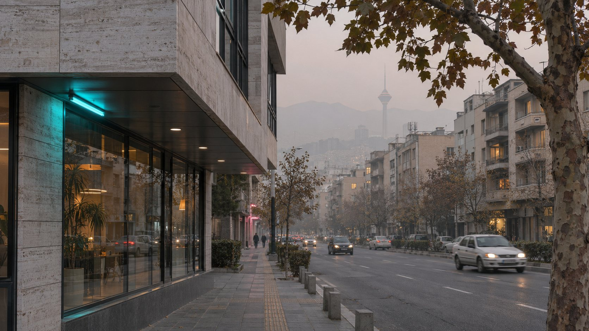
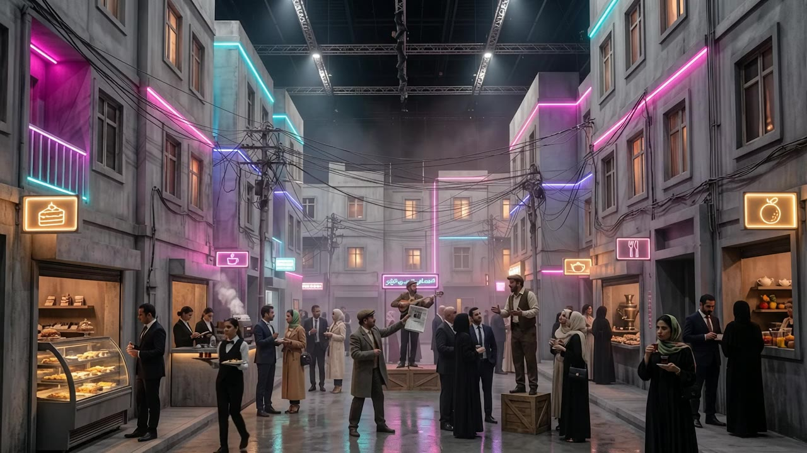

The idea
A tractor that drives in on its own electric power
Outside the city, the tractor crosses the desert with a load, on diesel. Inside the city, the same tractor runs on electric power with the diesel engine off. On launch night that truth happens in front of the guests: the tractor drives out of the desert, through the wall and into the city — silently, on its own electric power. So the reveal is itself the proof, not a claim on a screen.
Live proof, not claims
The tractor really enters on electric power; its road power is shown with real, dated film of the same unit.
Reveal before the speeches
The key moment comes in the first minutes, while every guest of honour is present.
One lasting photo
The tractor at the centre of the holographic city — tomorrow’s press photo. Never in smog.
The proposed name
The City’s Fresh Breath
One journey, two powers, and the city takes a fresh breath.
It is exactly what the guests see happen: the desert gives way to a city as the electric tractor arrives, and on the way out a grey street comes back to life under their hands. The name is simple, speaks everyday language and makes no exaggerated technical claim.
One night in four parts
The guests begin the night in a city they know every day: grey, crowded and smoggy — but alive. In a round amphitheatre a truck crosses the desert on a curved LED wall, the wall slides open and Titan Diesel’s hybrid tractor rolls out in silence on its own electric power; the desert becomes a blue holographic city. A separate route takes guests to dinner in the forest, and they leave along a street that comes back to life under their hands.

Part 1The Grey CityAfter check-in, guests walk through a narrow corridor into a city built inside the hall: grey buildings, tangled wires, coloured neon and a little smog. The ground floors are shops that serve them; a newspaper seller, a speaker and a street musician perform. Part 2The Hybrid PulseIn a round amphitheatre a truck crosses the desert on the curved LED wall and comes closer; the wall slides open, the real tractor rolls out silently on electric power to the centre of the floor, the wall closes and the desert turns into a blue holographic city.
Part 2The Hybrid PulseIn a round amphitheatre a truck crosses the desert on the curved LED wall and comes closer; the wall slides open, the real tractor rolls out silently on electric power to the centre of the floor, the wall closes and the desert turns into a blue holographic city.- Part 3Project OxygenGuests take a separate route to dinner, without going back into the grey street: a hall with the grandeur of a forest — a forest on LED, real trees and tables dressed with forest-style arrangements.
 Part 4Life AgainA group photo and a gift — a small potted plant — then out along a corridor of interactive LED walls showing a real street: a touch makes flowers bloom, windows light up and the smog clear.
Part 4Life AgainA group photo and a gift — a small potted plant — then out along a corridor of interactive LED walls showing a real street: a touch makes flowers bloom, windows light up and the smog clear.
Why this concept works
Proof, not claims
The tractor really enters on electric power, in silence; guests see and hear it for themselves.
Guests inside the story
Every space is a chapter of the story, not a booth: from the smoggy city to the amphitheatre, into the forest, and finally out along a street that comes alive under their own hands.
One lasting image
The tractor at the centre of the blue holographic city — the photo the media will run the next day. The tractor is never seen in smog.
The way in and the way out

Drag to compare the street guests walk into at 18:30 with the one they leave through at 22:30.
Four worlds, one story
Design language: the street before the reveal — grey, soot, cold sodium light, light haze and pink and cyan neon; the amphitheatre — warm desert gold on the curved wall, turning into a blue holographic city when the tractor arrives; dinner — forest green, pink and white flowers and warm gold; the way out — a real, sunlit residential street with flowers on every balcony. Materials: painted particleboard and MDF, tiered seating platforms, LED with a sliding gate, interactive LED walls, real trees, flowers and plants.
Venue and safety
The amphitheatre needs a high ceiling, a truck-sized route to the back of the LED gate and a strong floor; heights and loads are confirmed after the site visit. All timber, fabric and branches are fire-treated, and haze is used only in coordination with the fire-alarm system. The tractor is never seen in smog; the pollution message stays positive and solution-led.

Next: part 1 of 4The Grey City